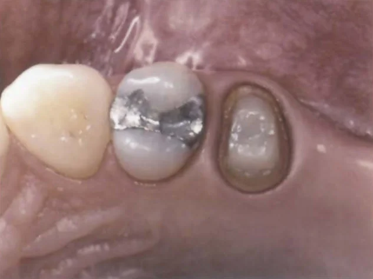

پست و کور رتروفیت
گاهی روکش بیمار سالم و قابل قبول است، اما همراه با کور داخلش از دندان جدا شده، یا بعد از تراش، موقع برداشتن روکش موقت، بخش تاجی دندان شکسته است. در این شرایط میشود به جای ساخت روکش جدید، یک پست و کور تازه ساخت که دقیقاً با داخل همان روکش قدیمی جفت شود.
∆ چه وقت میشود از این روش استفاده کرد؟
این کار فقط وقتی منطقی است که هم روکش و هم دندان شرایط لازم را داشته باشند. روکش باید از نظر ظاهر، تماس با دندانهای کناری و بایت مشکلی نداشته باشد یا مشکلش قابل اصلاح باشد. لبههای دندان هم باید سالم باشند و هنوز دقیق زیر لبهی روکش قرار بگیرند، و حدود ۲ میلیمتر از ساختار تاجی دندان باقی مانده باشد. اگر دندان به درمان مجدد ریشه نیاز دارد، باید طوری انجام شود که لبهها و ارتفاع دیوارهها از دست نرود.
∆ مراحل کار
برای انجام کار، کانال برای یک پست پیشساخته آماده میشود و طول بیرونی پست طوری انتخاب میشود که مانع نشستن کامل روکش نشود. بعد در اتاقک پالپ و اطراف پست آندرکات ایجاد میشود تا کامپوزیت گیر مکانیکی داشته باشد. کامپوزیت خلفی لایتکیوری انتخاب میشود که رنگش با دندان فرق داشته باشد تا کامپوزیت اضافه روی لبهها راحت دیده شود. داخل روکش هم با باندینگ آغشته میشود تا کامپوزیت به آن نچسبد.
کور لایهلایه ساخته میشود. هر بار مقدار کمی کامپوزیت گذاشته میشود، روکش امتحان میشود تا مطمئن شویم کامل مینشیند و کامپوزیتی روی لبهها رانده نشده، بعد روکش برداشته و کامپوزیت کیور میشود. این کار آنقدر تکرار میشود تا کور گیر و مقاومت کافی پیدا کند. اگر جایی روکش کامل ننشست، همان موقع با فرز از کور برداشته میشود و کار ادامه پیدا میکند.

در آخر، باندینگ از داخل روکش پاک میشود، داخل روکش سندبلاست میشود و روکش سمان میشود.
∆ نسخهی ریختگی و مشکلش
میشود به جای این روش، پترن پست و کور را مستقیم در دهان ساخت، طوری که هم با کانال و هم با روکش جفت شود، و بعد آن را ریختهگری کرد. اما این روش سختتر و حساستر به تکنیک است، چون پترنی که در دهان دقیق بوده، بعد از ریختهگری ممکن است دیگر همان تطابق را با دندان و روکش نداشته باشد، و رساندن یک قطعهی فلزی به همان دقت کار سادهای نیست.